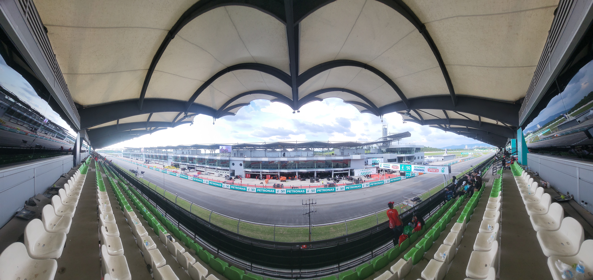

A próxima etapa da Fórmula 1 em 2026 terá um cenário incomum e histórico. O GP do Bahrein será disputado entre os dias 2 e 4 de outubro, na Malásia, pista que não recebia uma corrida da categoria desde 2017, a prova será a 16ª etapa do campeonato.
Apesar do nome oficial de GP do Bahrein, os carros estarão a milhares de quilômetros do país que tradicionalmente recebe a corrida. A mudança ocorreu depois que a etapa originalmente prevista para abril não pôde ser realizada. Fórmula 1 e FIA chegaram a um acordo para preservar a prova no calendário, transferindo sua realização para Sepang.
Além de criar uma das situações mais particulares da história recente da categoria, a decisão recoloca em evidência um circuito conhecido por combinar altas velocidades, freadas fortes, calor, umidade e possibilidade de mudanças bruscas nas condições da pista.
A largada está marcada para às 4h da manhã pelo horário de Brasília. O fim de semana seguirá o formato tradicional, com três treinos livres, classificação e corrida, sem Sprint.
Programação do GP do Bahrein na Malásia no horário de Brasília:
Sexta-feira, 2 de outubro
- Treino Livre 1 — 1h30
- Treino Livre 2 — 5h
Sábado, 3 de outubro
- Treino Livre 3 — 1h30
- Classificação — 5h
Domingo, 4 de outubro
- Corrida — 4h
A corrida será no Circuito Internacional de Sepang, na região de Kuala Lumpur. A pista possui 5,543 quilômetros, e o GP está programado para 56 voltas, totalizando 310,398 quilômetros de distância. A referência oficial de volta mais rápida em corrida é de Sebastian Vettel, que registrou 1min34s080 em 2017.
Sepang foi inaugurado em 1999 e entrou imediatamente para o calendário da Fórmula 1. Projetado por Hermann Tilke, tornou-se uma das primeiras grandes referências da geração moderna de autódromos construídos especificamente para receber categorias internacionais.
O desenho da pista ajuda a explicar sua reputação. O circuito combina retas longas, zonas de freadas fortes e curvas rápidas e de média velocidade. A largura do traçado permite diferentes linhas, enquanto as curvas 5 e 6 formam uma sequência rápida particularmente exigente. A última curva, a 15, é um grampo que desemboca na longa reta principal.
O retorno de Sepang à Fórmula 1
A importância esportiva do evento vai além de sua posição no calendário. Sepang não recebia a Fórmula 1 desde 2017. O circuito havia estreado na categoria em 1999, quando Eddie Irvine venceu pela Ferrari, e permaneceu durante quase duas décadas como uma das principais etapas asiáticas do campeonato.
Max Verstappen foi o vencedor da última corrida da Fórmula 1 realizada no circuito, em 2017. Lewis Hamilton e Fernando Alonso também estão entre os pilotos do atual grid que já venceram em Sepang, adicionando uma camada de experiência a um fim de semana no qual grande parte do pelotão enfrentará o circuito em uma corrida de F1 pela primeira vez.
O calor e a elevada umidade da Malásia aumentam o desgaste físico dos pilotos e também exigem atenção das equipes ao resfriamento dos componentes dos carros. Ao mesmo tempo, o clima tropical pode provocar chuvas fortes em pouco tempo.
Do ponto de vista técnico, a combinação entre retas extensas e curvas rápidas cria um compromisso importante de acerto. As equipes precisam encontrar velocidade suficiente para atacar e defender nas retas sem comprometer demais o desempenho nas partes de maior carga lateral.
As freadas também podem abrir oportunidades de ultrapassagem. A largura da pista, característica marcante de Sepang desde sua inauguração, oferece mais alternativas de trajetória do que circuitos urbanos estreitos.
Como está o campeonato
A Fórmula 1 chega à Malásia depois da vitória de George Russell no GP do Azerbaijão. O britânico venceu em Baku, com Max Verstappen em segundo e Isack Hadjar completando o pódio. Russell reduziu a diferença para o companheiro Kimi Antonelli na disputa pelo Mundial.
Classificação do Mundial de Pilotos:
- Kimi Antonelli — 302 pontos
- George Russell — 236 pontos
- Lewis Hamilton — 199 pontos
- Lando Norris — 186 pontos
- Charles Leclerc — 179 pontos
- Max Verstappen — 163 pontos
Gabriel Bortoleto, piloto da Audi, soma 10 pontos no campeonato.
Mercedes domina o Mundial de Construtores
- Pontos: 538
- Vitórias: 11
- GPs disputados até o Azerbaijão: 15
A equipe chega a Sepang como a principal referência da temporada de 2026, sustentada pela liderança entre os construtores e pelo elevado número de vitórias conquistadas até esta fase do campeonato.
Onde assistir ao GP
No Brasil, o sportv 3 terá a transmissão das atividades do fim de semana.
O acordo iniciado em 2026 prevê cobertura das sessões da temporada nos canais e plataformas do Grupo Globo, com o sportv exibindo ao vivo treinos, classificações, Sprints e Grandes Prêmios.
Sepang pode ser um ponto-chave da temporada
O retorno do circuito reúne elementos pouco comuns em uma mesma etapa: um circuito histórico de volta depois de nove anos, uma corrida disputada fora do país que dá nome oficialmente ao Grande Prêmio e um campeonato entrando em sua fase decisiva.
Mais importante, a pista malaia oferece características capazes de testar os carros de maneira ampla. Velocidade em reta, estabilidade em curvas rápidas, eficiência aerodinâmica, frenagem, gerenciamento térmico e adaptação às condições climáticas podem ter papel importante ao longo das 56 voltas.
Por isso, o GP do Bahrein na Malásia é mais do que uma solução excepcional para o calendário de 2026. A passagem da Fórmula 1 por Sepang recupera um circuito marcante da categoria e cria uma etapa singular justamente quando a temporada se aproxima de sua reta final. Depois da Malásia, o campeonato seguirá para Singapura, Estados Unidos, México e Brasil antes dos compromissos finais do ano.